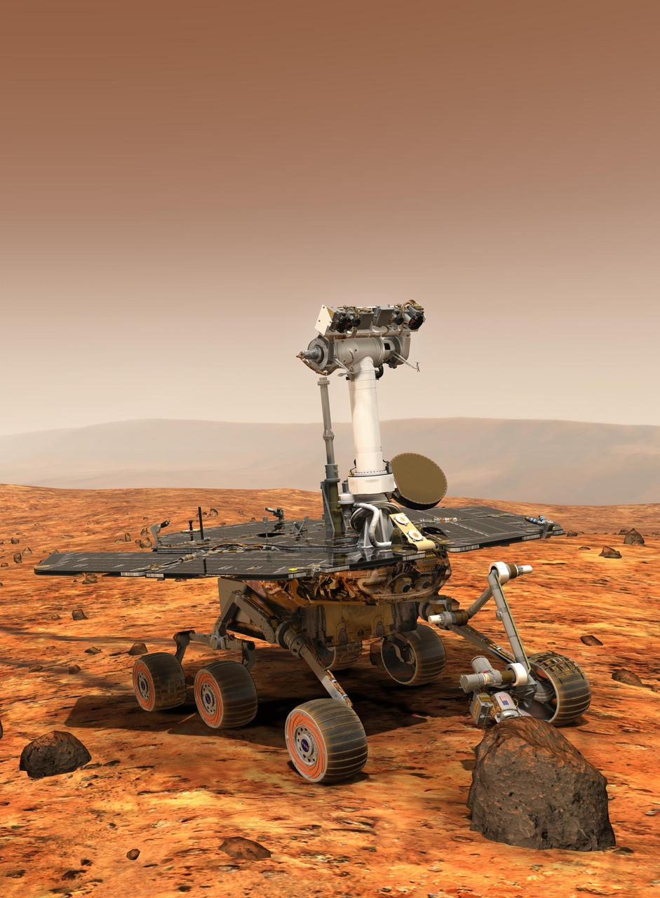

Spirit and Opportunity
Spirit and Opportunity were twin rovers that landed on Mars in 2004. Their mission focused on studying rocks and soil for evidence that water once shaped the Martian environment.
- Launch: 2003
- Landing: 2004
- Major focus: Evidence of past water